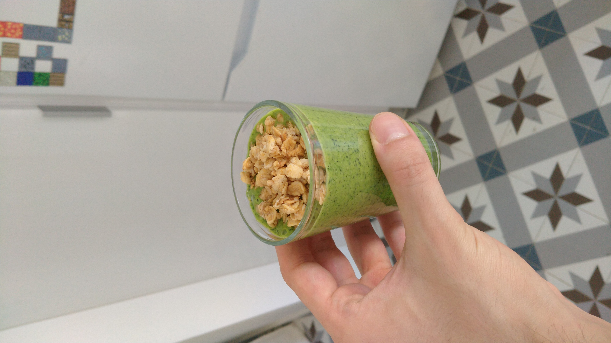

Spinach Smoothie

Overview:
A super-simple, super-fast recipe to make mornings tasty and healthy.
Ingredients:
- 1 banana,
- A handful of spinach,
- A glass of milk,
- Oats,
- Optional:Accent fruit (strawberries, blueberries...)
Preparation:
- If you haven't already, separate the spinach leaves from the stems.
- Peel and cut the banana.
- Place the oats in the blender and blend until powdery.
- Add the rest of the ingredients and blend.
After you finish the last step, taste for consistency & flavor, then adjust and repeat.